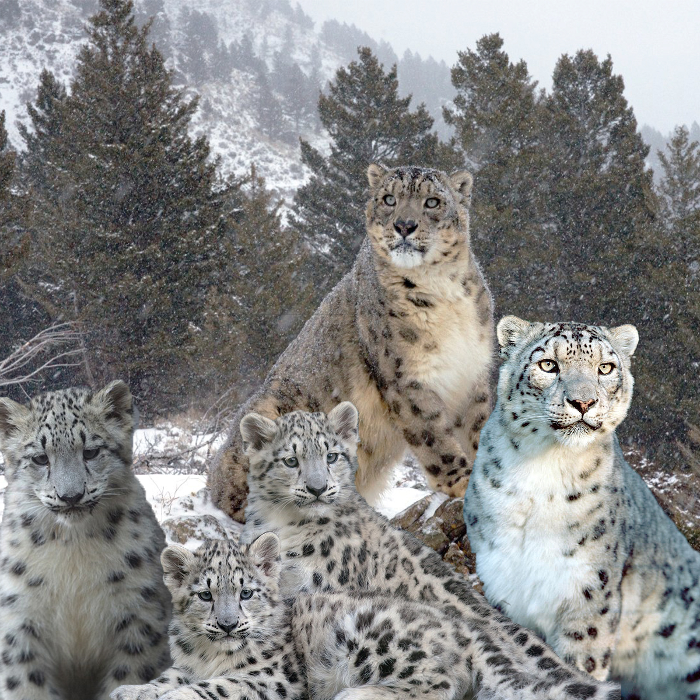

Climate Change is the phenomenon of the Earth's ecosystem being altered by humans burning coal, oil, and gas. These gases geat up the air which in turn changes the climate. While there are other factors contrbuting to shifts in climate (such as volcanos erupting, the sun sendinf out more or less energy, etc) humans are the main culprits for the dramatic changes we've experienced recently.
I wanted to bring attention to a species which is particularly affected by Climate Change - the Snow Leopard.
Snow Leopards can be found in Central Asia. Their population declined 20% during the last 16 years. They are now considered an endangered speices with less than 7,000 in the wild. Climate change not only is effecting their enviornment but it is also effecting their food source, their prey.
This image was created by using these images